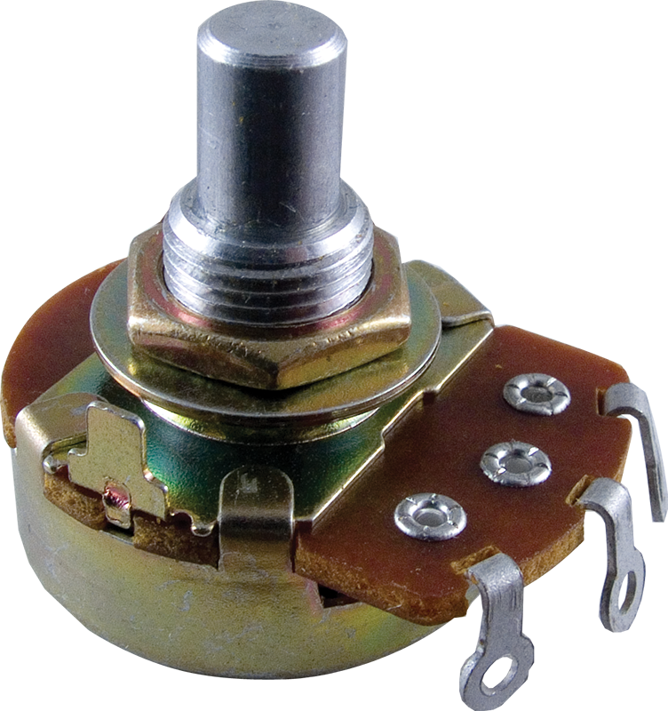
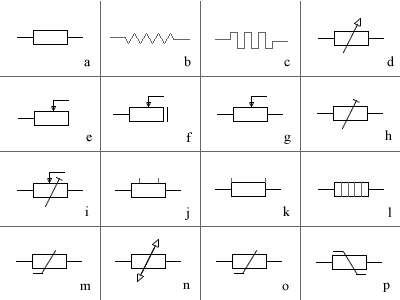

Rezistente electrice
Rezistorul este o piesă componentă din circuitele electrice și electronice a cărei principală proprietate este rezistența electrică.
Rezistorul obișnuit are două terminale; conform legii lui Ohm, curentul electric care curge prin rezistor este proporțional cu tensiunea aplicată pe terminalele rezistorului I = U / R .

Cel mai important parametru al unui rezistor este rezistența sa electrică, exprimată în ohmi. Rezistoarele sunt
complet caracterizate prin
între tensiunea la borne și intensitatea curentului prin element, atunci când dependența
U=f(I) este liniară. Rezistoarele se pot clasifica dupa mai multe criterii.
Dupa materialul folosit, se realizează:
- rezistoare din metale sau aliaje metalice (fire sau benzi);
- rezistoare peliculare cu carbon, (pelicule depuse pe un suport izolat);
- rezistoare cu peliculă de metal-oxid;
- cu lichid, bazate pe rezistența unui strat de lichid între două plăci metalice cufundate în lichid.
Un rezistor variabil este un rezistor a cărui rezistență electrică poate fi ajustată prin deplasarea mecanică a unui contact (cursor) electric intermediar; cel mai adesea rezistoarele de acest tip au trei terminale: capetele rezistorului (între care rezistența este maximă și constantă) și conexiunea la contactul mobil(cursor). Dacă contactul mobil nu face punct comun cu unul din capete, atunci uzual se vorbește despre "un potențiometru", care este un divizor variabil de tensiune.
Simbolizarea rezistoarelor electrice Rezistoarele sunt reprezentate conventional printr-o serie de simboluri care sunt ilustrate in figura de mai jos.
- a: rezistor,semn general
- b: rezistor,semn tolerat
- c: rezistor, semn nestandardizat
- d: rezistor cu rezistaenta variabila
- e: rezistor cu contact mobil
- f: rezistor cu contact mobil cu pozitie de intrerupere
- g: potentiometru cu contact mobil
- h: potentiometru cu contact mobil,semn general
- i: potentiometru cu ajustare predeterminata
- j: rezistenta cu doua prize fixe
- k: rezistor cu rezistenta neliniara dependenta de temperatura (termistor)
- l: rezistor cu rezistenta neliniara dependenta de temperatura, semn tolerat(termistor)
- m: rezistor cu rezistenta neliniara dependenta de tensiune (varistor)
- n: rezistor cu rezistenta neliniara dependenta de tensiune, semn tolerat (varistor)
În circuit, rolul rezistorului poate fi: producerea căderii de tensiunii dorite între două puncte din circuit; determinarea curentului dorit printr-o altă piesă a circuitului; divizarea unei tensiuni într-un raport dat (circuit divizor de tensiune); terminarea unei linii de transmisie(ca rezistență de sarcină).